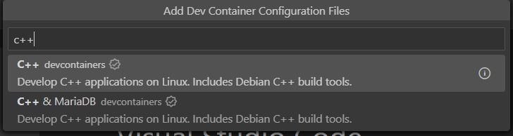
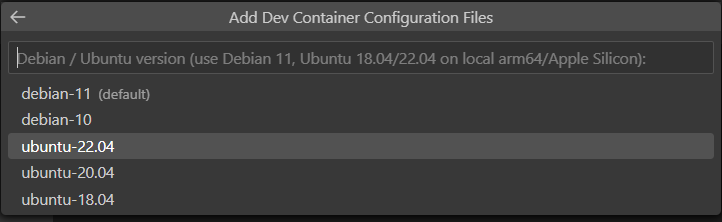
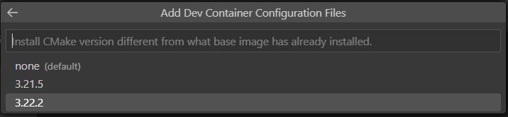
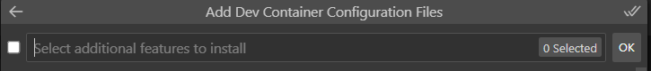

Visual Studio Code Installation
In your browser, navigate to Visual Studio Code download page. The web page displays logos for Windows, macOS, and Linux
Download the VSCode installer for Windows/Mac/Linux. Once it is downloaded, run the installer.
After accepting all the requests, press the finish button.
Open the VSCode to verify the installation.
Now, install the
Remote Development extensionpack. It will let us open any folder in a container, on a remote machine, or in the Windows Subsystem for Linux (WSL) and take advantage of VS Code’s full feature set.
If you installed Ubuntu in VirtualBox, VS Code can connect directly to the Linux virtual machine using SSH. Your programs will run inside Ubuntu while you use VS Code on your Windows or macOS computer.
1. Install and Start SSH in Ubuntu
Start the Ubuntu virtual machine and log in. Open a terminal and run:
sudo apt update
sudo apt install openssh-server -yEnable and start the SSH service:
sudo systemctl enable --now sshVerify that SSH is running:
sudo systemctl status sshYou should see:
Active: active (running)2. Configure VirtualBox Port Forwarding
Shut down the Ubuntu virtual machine.
In VirtualBox, select the Ubuntu VM and open:
Settings → Network → Adapter 1
Make sure:
Attached to: NATClick Port Forwarding and add the following rule:
| Setting | Value |
|---|---|
| Name | SSH |
| Protocol | TCP |
| Host IP | 127.0.0.1 |
| Host Port | 2222 |
| Guest IP | Leave blank |
| Guest Port | 22 |
Save the settings and start the Ubuntu virtual machine again.
3. Test the SSH Connection
On your main Windows or macOS computer, open Terminal or PowerShell and run:
ssh -p 2222 username@localhostReplace username with your Ubuntu username.
For an OSBoxes image, for example:
ssh -p 2222 osboxes@localhostEnter your Ubuntu password when prompted.
The first time you connect, type:
yesIf you see the Ubuntu command prompt, the SSH connection is working.
Type:
exitto disconnect.
4. Install the Remote Development Extension in VS Code
Open VS Code and open the Extensions view:
- Windows/Linux:
Ctrl+Shift+X - macOS:
Cmd+Shift+X
Search for and install:
Remote Development5. Connect VS Code to Ubuntu
Open the Command Palette:
- Windows/Linux:
Ctrl+Shift+P - macOS:
Cmd+Shift+P
Search for:
Remote-SSH: Connect to Host...Select:
Add New SSH Host...Enter:
ssh -p 2222 username@localhostFor example:
ssh -p 2222 osboxes@localhostSelect the suggested SSH configuration file.
Open the Command Palette again and select:
Remote-SSH: Connect to Host...Choose the Ubuntu connection you just created.
If prompted for the operating system, select:
LinuxEnter your Ubuntu password when requested.
6. Open Your Linux Workspace
A new VS Code window will open and connect to the Ubuntu virtual machine.
Select:
File → Open Folder
and open your Linux home directory, for example:
/home/username/or, for OSBoxes:
/home/osboxes/Open a terminal in VS Code using:
Terminal → New Terminal
The terminal is now running inside your Ubuntu virtual machine.
You can verify the connection using:
uname -aYou can also verify that the required development tools are available:
gcc --version
g++ --version
make --version
java -version
python3 --versionYou can now edit, compile, and run your programs in Ubuntu directly from VS Code.
To open a CP386 workspace in a Linux environment and using IDE, follow the steps:
Start VS Code, run the Dev Containers: Open Folder in Container… command from the Command Palette (F1) or quick actions Status bar item, and select the project folder you would like to set up the container for:
Now, pick a starting point for your dev container and follow the steps below:
Step 1:

- Step 2:
- Step 3:
- Step 4:
- The VS Code window will reload and start building the dev container. A progress notification provides status updates. Now, you can open Terminal and can run makefile. Enjoy your programming.
- If you chose to use WSL then you can connect VSCode to WSL2:
- Start VS Code.
- Press F1, select WSL: New WSL Window for the default distro or WSL: New WSL Window using Ubuntu for a specific version.
- Use the File menu to open your folder.
VSCode Extensions
autoDocstring Extension
Docstrings help understand code functionality and are essential for writing clean and well-documented programs. This extension will assist you in automatically creating default documentation whenever you create a new a Python function (Nils Werner (2023)).
The autoDocstring extension helps us quickly generate docstring for Python functions. By typing triple quotes ““” or ’’’ within the function, we can generate and modify docstring.
- In VSCode, select View -> Extensions or press Ctrl+Shift+X (Cmd+Shift+X on macOS) to open the Extensions view. It will display all the extensions available for VSCode.
- In the search bar at the top of the Extensions view, type “AutoDocString”.
- From the search results, locate the “AutoDocString” extension by Nils Werner and select “Install”.
- After installation, the button will change to “Reload” - click on it to reload Visual Studio Code and activate the extension.